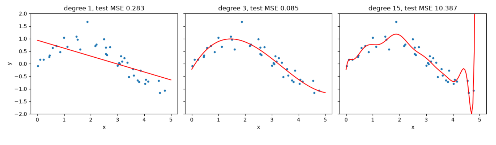

MLR – průběžný test 1 · Ukázky A a B s řešením – MLR · https://balnerm.github.io/pripravy/mlr/test1/10_ukazky.html
Ukázky A a B s řešením
Oba ukázkové testy celé a v původním znění. Nejdřív si je zkus napsat na čas (25 minut, papír, bez kalkulačky), pak rozbal vzorovou odpověď. Odpovědi jsou v angličtině tak, jak by stačily na plný počet bodů; podrobné vysvětlení a podobné úlohy najdeš v odkazované kapitole.
Header of both tests: 25 minutes · 5 points · paper only · no notes, AI or calculator. Show your reasoning; fractions are acceptable. All tasks are independent. Read code without running it. np is NumPy; indices start at zero.
Practical test 1 — sample A
Fit \(\hat y = b + wx\) to (−1, 0), (0, 0), (1, 6). Rows are samples; columns of X are ordered [1, x], and \(\mathbf w = [b, w]^\top\). Use \(\mathbf w = (X^\top X)^{-1}X^\top\mathbf y\).
a) Write X and y. Explain the column of ones. (0.5)
b) Substitute the numerical arrays into the supplied formula for w. Leave transposes, products and the inverse unevaluated. (0.5)
c) A computer returns b = 2 and w = 3. Predict the response at x = 2. (0.25)
Vzorová odpověď
The column of ones multiplies the intercept b, so b is learned as an ordinary weight: ŷᵢ = b·1 + w·xᵢ.
\[ \mathbf w = \left( \begin{bmatrix} 1 & -1 \\ 1 & 0 \\ 1 & 1 \end{bmatrix}^{\!\top} \begin{bmatrix} 1 & -1 \\ 1 & 0 \\ 1 & 1 \end{bmatrix} \right)^{-1} \begin{bmatrix} 1 & -1 \\ 1 & 0 \\ 1 & 1 \end{bmatrix}^{\!\top} \begin{bmatrix} 0 \\ 0 \\ 6 \end{bmatrix} \]ŷ(2) = 2 + 3·2 = 8. → kapitola 6
Training and validation rows have already been split correctly. A k-NN model will use these transformed features:
scaler = StandardScaler()
X_train = scaler.fit_transform(train)
X_valid = scaler.fit_transform(valid)a) Explain why the original code is wrong for distance-based prediction. Which data must determine the mean and standard deviation? (0.75)
b) The training mean is 1 and standard deviation is 1. Standardize a validation value of 4. (0.25)
Vzorová odpověď
a) The second line refits the scaler on the validation data, so validation features are scaled with a different mean and standard deviation than the training features. The two sets are then in different units, k-NN distances between a validation point and training points are distorted, and information from the validation data leaks into preprocessing. The mean and standard deviation must come from the training data only: X_valid = scaler.transform(valid).
b) z = (4 − 1)/1 = 3. → kapitola 4
a) What is a skill for an AI agent? Answer in one sentence. (0.25)
b) How would you go about creating a skill for an AI agent? Briefly describe your approach. (0.5)
Vzorová odpověď
a) A skill is a saved, reusable recipe (a SKILL.md file with a name, a description of when to use it and instructions) that the agent loads only when the task needs it.
b) Do the task once with the agent and note the steps and the check that worked; write .claude/skills/<name>/SKILL.md with a name, a clear description of when to use it and short instructions (plus a script if needed); test it in a fresh session and refine. → kapitola 9
The plots show three polynomial fits to the same synthetic training data. Dots are training observations; lines are predictions. Part of the degree-15 curve lies outside the displayed vertical range. These are recorded lab results. \(\text{MSE} = \frac1n\sum_{i=1}^n(\hat y_i - y_i)^2\).

| Degree | Training MSE | Test MSE |
|---|---|---|
| 1 | 0.2270 | 0.2825 |
| 3 | 0.0508 | 0.0851 |
| 15 | 0.0404 | 10.3871 |
a) Which fit underfits the curved trend, and which shows overfitting? Support your answer using the curves and the error table. (0.5)
b) Which has the lowest recorded test error? In a new experiment, which split should guide degree selection so that the final test stays independent? (0.5)
Vzorová odpověď
a) Degree 1 underfits: the straight line cannot follow the curve and has the highest training MSE (0.227) and a similar test MSE. Degree 15 overfits: it oscillates between points and shoots off at the edge; the lowest training MSE (0.040) but a huge test MSE (10.39).
b) Degree 3 (test MSE 0.085). Degree should be chosen on a separate validation split (or by cross-validation on the training data); the test set is used only once at the end. → kapitola 7
Three trees predict labels 0 or 1. Each row of V is one validation sample; each column is one tree. The true labels are given in the same row order.
\[ V = \begin{bmatrix} 0 & 1 & 0 \\ 1 & 1 & 0 \\ 0 & 0 & 1 \\ 1 & 1 & 1 \end{bmatrix},\qquad \mathbf y_{\text{val}} = \begin{bmatrix} 0 \\ 1 \\ 1 \\ 1 \end{bmatrix} \]y_hat = (V.mean(axis=1) > 0.5).astype(int)a) Explain axis=1 and write all four predictions. (0.5)
b) Calculate the ensemble's validation accuracy. (0.25)
c) Each tree trains on n rows drawn using rng.choice(n, size=n, replace=True). Can a row occur twice? Must every training row occur in each draw? (0.25)
Vzorová odpověď
a) axis=1 takes the mean across the columns (trees) of each row, i.e. the fraction of trees voting 1 for each sample: [1/3, 2/3, 1/3, 1] → ŷ = [0, 1, 0, 1].
b) Correct: samples 1, 2, 4 → accuracy = 3/4.
c) Yes, a row can occur twice (sampling with replacement). No, not every row must occur; some rows are left out of each draw (out-of-bag, about 37 %). → kapitola 8
Practical test 1 — sample B
t = np.array([-1., 0., 1.])
X = np.column_stack([t ** j for j in range(3)])
w = np.array([1., 2., 1.])
y_pred = X @ wnp.column_stack joins the supplied columns.
a) Write the matrix X and y_pred. (0.75)
b) Write the prediction equation in terms of t from the code above. Why is this model called linear in its weights, although its curve is not a straight line? (0.5)
Vzorová odpověď
b) ŷ = 1 + 2t + t². The prediction is a weighted sum of fixed features 1, t, t² with weights w₀, w₁, w₂, so it is linear in the weights (they can be fitted by linear least squares); only the features are nonlinear in t. → kapitola 7
X has shape (3, 2) with columns [1, x]; y has shape (3,). This implementation must penalize both coefficients, including the intercept. Use these formulas, with λ > 0 and I an identity matrix:
Read the code only; do not calculate an inverse. LA.inv computes a matrix inverse; np.eye(k) creates a k × k identity.
def ridge_fit(X, y, lam):
return LA.inv(X.T @ X + lam * np.eye(X.shape[0])) @ X.T @ ya) Explain the dimensional error and repair it. (0.5)
b) Explain what each term in J measures and how increasing λ changes the trade-off. (0.5)
Vzorová odpověď
a) X.T @ X is 2 × 2 (number of columns), but np.eye(X.shape[0]) is 3 × 3 (number of rows), so they cannot be added. The identity must have one row per weight: np.eye(X.shape[1]).
b) \(\|X\mathbf w - \mathbf y\|^2\) is the squared training error (how well the model fits the data); \(\lambda\|\mathbf w\|^2\) penalizes large weights (model complexity). Increasing λ puts more weight on small coefficients: the fit becomes smoother and less prone to overfitting, but the training error grows and a very large λ underfits (weights → 0). → kapitola 7
Class 1 means a faulty item; class 0 means a good item. Rows are actual labels and columns are predicted labels:
| Predicted 0 | Predicted 1 | |
|---|---|---|
| Actual 0 | 6 | 2 |
| Actual 1 | 1 | 3 |
For recall, treat class 1 as positive (TP: true positives, FN: false negatives): \(\text{recall}_1 = \frac{TP}{TP + FN}\).
a) How many faulty items were missed? How many good items were incorrectly flagged as faulty? (0.25)
b) Calculate accuracy and recall for class 1. Show the denominators. (0.5)
c) Explain recall for class 1 in words in this application. (0.25)
Vzorová odpověď
a) Missed faulty items: FN = 1. Good items flagged as faulty: FP = 2.
\[ \begin{aligned} \text{accuracy} &= \frac{3 + 6}{6 + 2 + 1 + 3} = \frac{9}{12} = 0.75 \\ \text{recall}_1 &= \frac{3}{3 + 1} = \frac34 \end{aligned} \]c) Recall for class 1 is the share of truly faulty items that the model catches: 3 of the 4 faulty items were detected. → kapitola 3
Each score is the validation accuracy obtained by adding the corresponding feature in remaining to the already selected set.
selected = [0]
remaining = [1, 3, 4]
best_score = 0.75
scores = [0.80, 0.90, 0.85]
best_position = int(np.argmax(scores))
# update selected and remaining hereThe search accepts a new feature only if validation accuracy strictly improves.
a) Give best_position and the original feature number to add. Explain the distinction. (0.25)
b) Replace the comment with an update that adds the correct feature and removes it from remaining. Give both resulting lists. Python or clear pseudocode is acceptable. (0.5)
c) After accepting this step and updating best_score, the best candidate in the next step again scores 0.90. Should the search accept it? Explain. (0.25)
Vzorová odpověď
a) best_position = 1 (index in scores and remaining); the feature is remaining[1] = 3. The position says where the candidate is in the list, the feature number which data column it is.
feature = remaining.pop(best_position) # 3
selected.append(feature)
best_score = scores[best_position] # 0.90b) selected = [0, 3], remaining = [1, 4].
c) No – 0.90 is not strictly greater than the current best 0.90, so the search stops. → kapitola 5
a) What is a subagent? Answer in one sentence. (0.25)
b) Give one simple task you could delegate to a subagent and say what it should return. One or two sentences are enough. (0.5)
Vzorová odpověď
a) A subagent is a helper that the main agent starts for a side task; it has its own fresh context and returns only a short summary.
b) Read the long training log and return only the epoch with the lowest validation loss, its value and any error messages. → kapitola 9
- Pět úloh za ~5 minut. Nejdřív rychlé body (definice agentů, tvar matice, predikce), pak výpočty.
- Vždy napiš i mezikrok (matice, zlomek se jmenovatelem) – „show your reasoning“.
- Zlomky nech jako zlomky, kalkulačka není potřeba.
- U „explain“ jedna věta s důvodem: because …